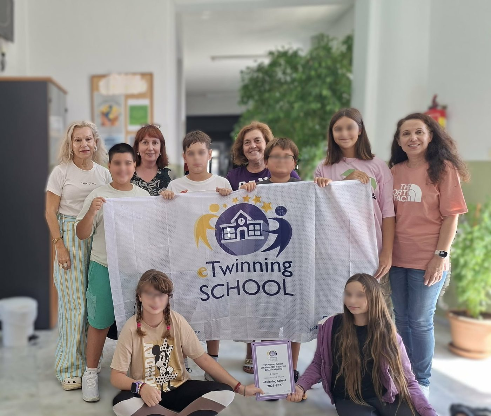
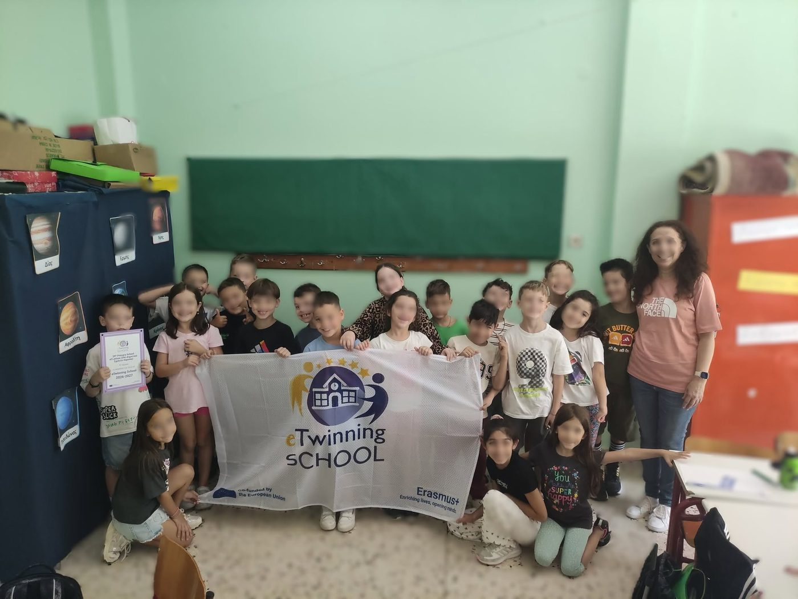
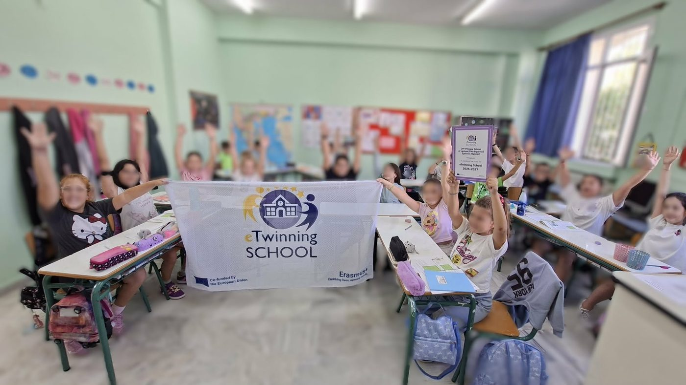
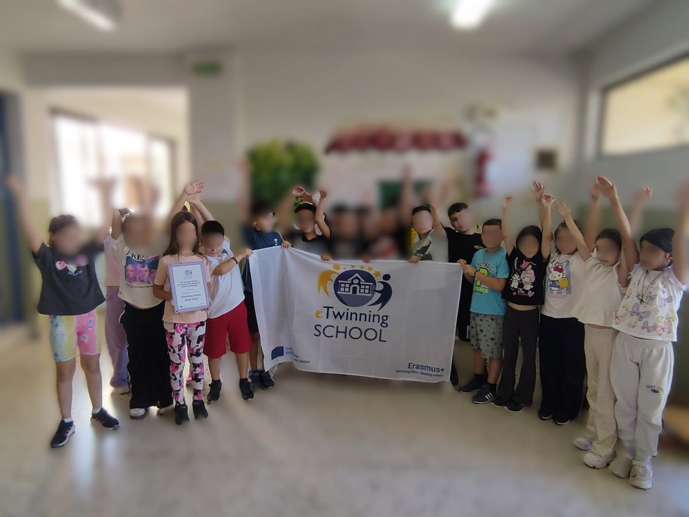

Με χαρά παραλάβαμε την πλακέτα και τη σημαία eTwinning School, που σηματοδοτούν την απονομή της Ετικέτας Σχολείου eTwinning (eTwinning School Label) για το 2026–2027!
Μια διάκριση που ανήκει σε ολόκληρη τη σχολική μας κοινότητα: στους εκπαιδευτικούς, τους μαθητές και τους γονείς που στηρίζουν τη συνεργασία, τη συμπερίληψη, τη δημιουργικότητα και την ευρωπαϊκή μας πορεία.
Τη σχολική χρονιά 2025–2026 υλοποιήσαμε 4 ευρωπαϊκά έργα eTwinning, με τη συμμετοχή μαθητών από διαφορετικές τάξεις και συνεργαζόμενα σχολεία από την Ευρώπη.
Συνεχίζουμε με νέες ιδέες, συνεργασίες και ευρωπαϊκές εμπειρίες!
We were delighted to receive the eTwinning School plaque and flag, marking the award of the eTwinning School Label for 2026–2027!
This distinction belongs to our whole school community: the teachers, pupils and parents who support collaboration, inclusion, creativity and our European journey.
In the 2025–2026 school year we carried out 4 European eTwinning projects, with pupils from different classes and partner schools across Europe.
We carry on with new ideas, new partnerships and new European experiences!



